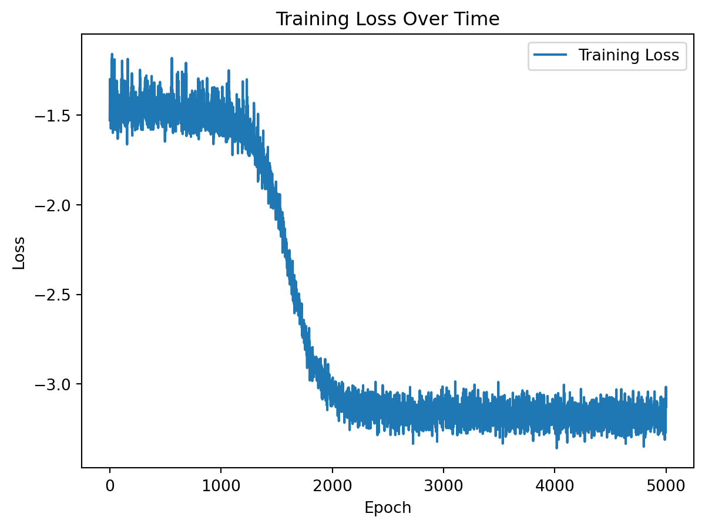
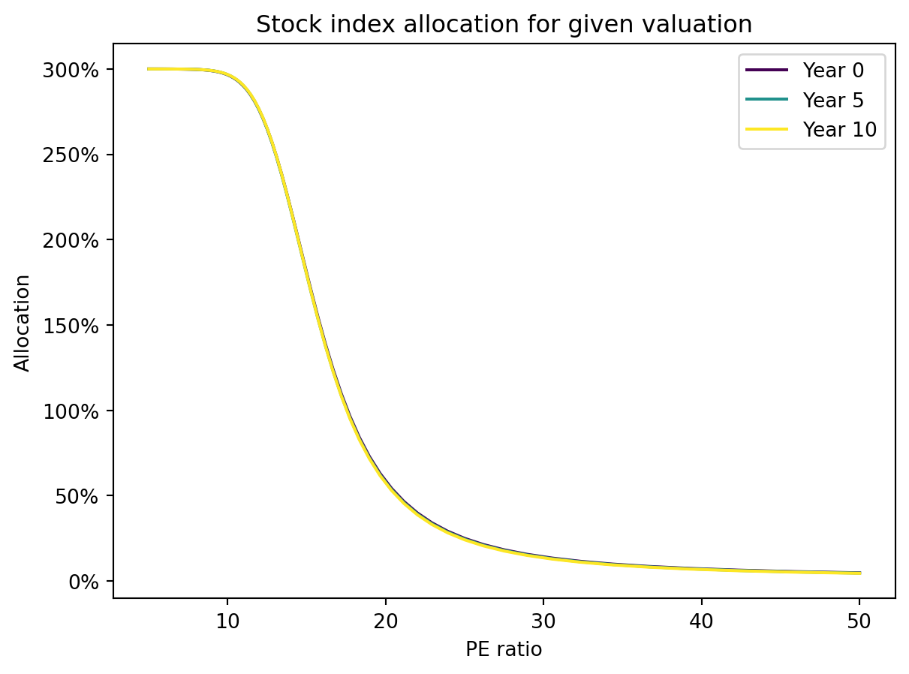
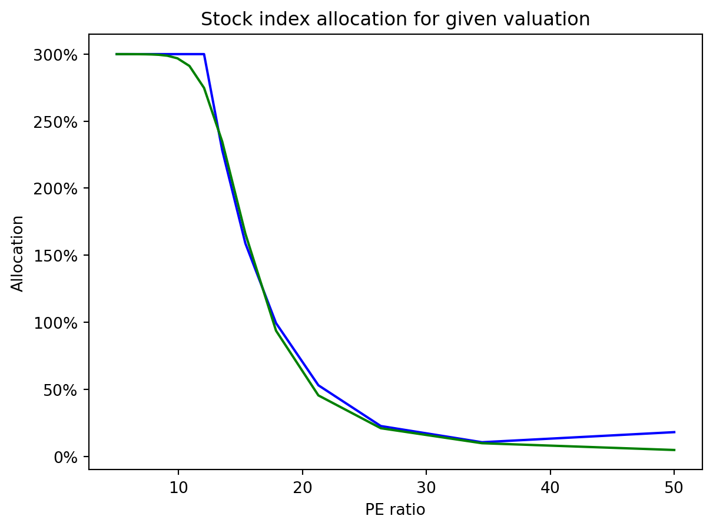
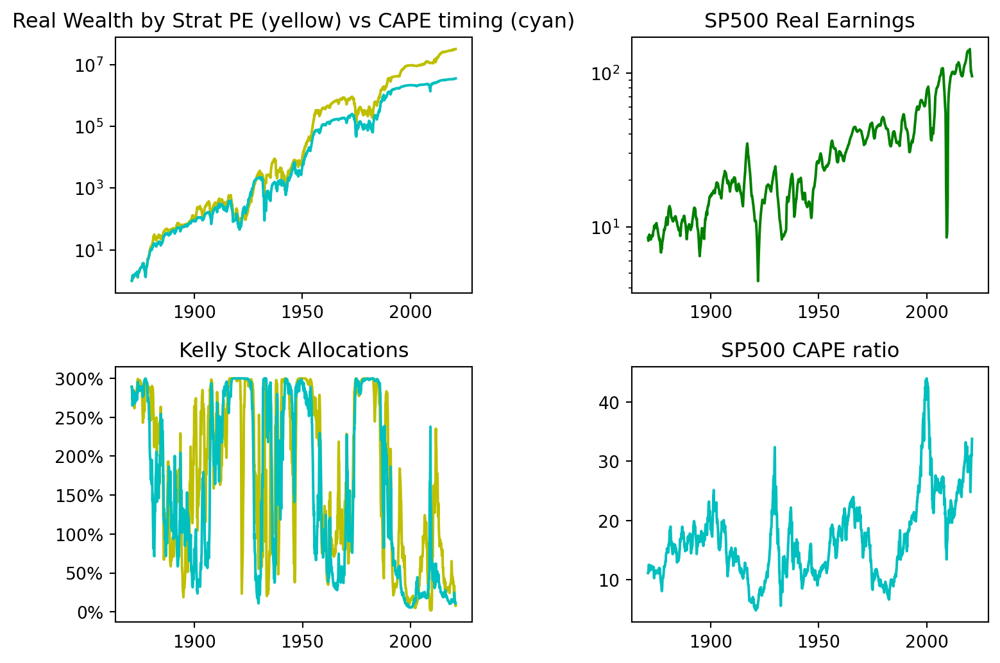
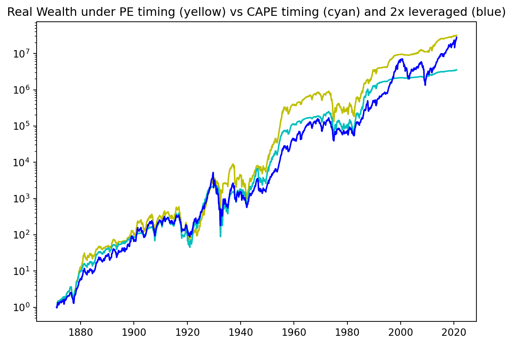
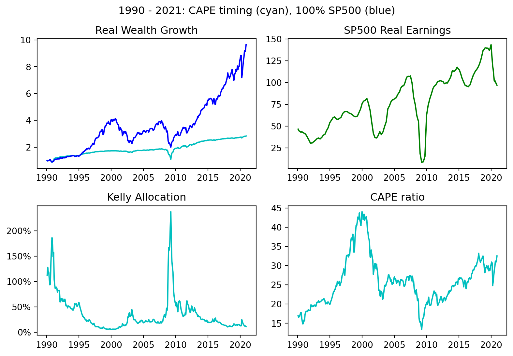
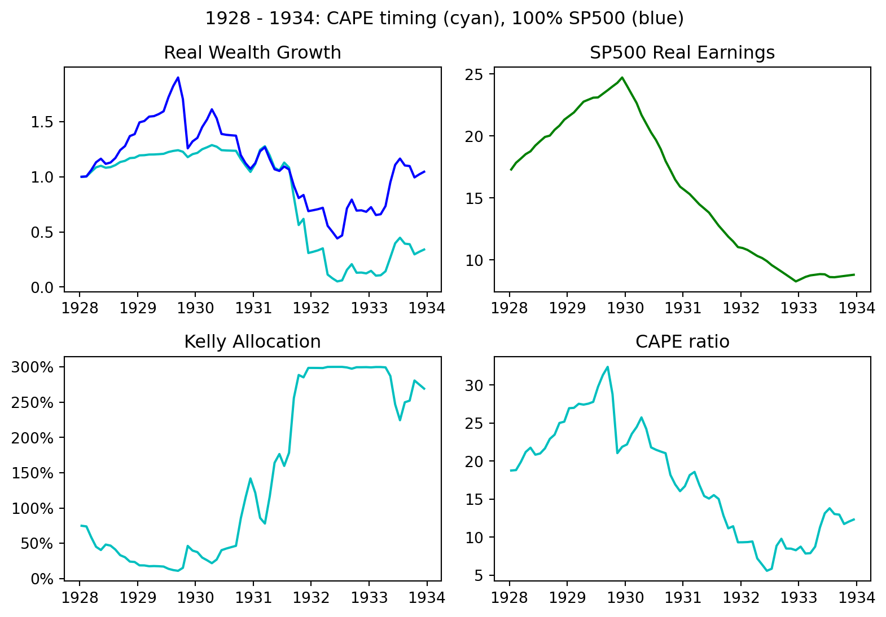

import torch
from torch import nn
class Model(nn.Module):
#Standard NN
def __init__(self):
super().__init__()
self.net = nn.Sequential(
nn.Linear(2,64),
nn.Sigmoid(),
nn.Linear(64, 64),
nn.Sigmoid(),
nn.Linear(64, 1),
nn.Sigmoid()
)
def forward(self,z):
return 3*self.net(z) #bounds alloc between 0% and 300% (see final output) as to not short or get too leveraged. This makes simulations / training run smoothly.
pi_NN = Model()Valuation-based Kelly Optimal Portfolios for Market Cycle Investing
Overview
This post finds a Kelly optimal portfolio allocation depending on PE ratio of an underlying stock index. We assume that the earnings of the index as well as the market multiple are exogenous variables described by SDEs. The earnings of the index are driven by a Geometric Brownian Motion, while the earnings yield is driven by a modified Ornstein-Uhlenbeck process with parameters determined from historical data. We construct the Kelly optimal portfolio through neural networks as well as analytically. The impact is two-fold: On one hand we can see how such a portfolio strategy would have done over a long history of SP500 data. On the other hand, and most importantly for future application, we showcase how such a machine learning technique can be used for portfolio optimization and show that it approximates the analytical solution of a given model. This motivates the use of these machine learning techniques to find optimal portfolios for more realistic and sophisticated modeled dynamics.
To make such a model useful, we will have to construct a more realistic model of valuation and impact on return. The first thing we could add is to add interest rates in a joint model with PE ratios. Secondly, a key problem with the model on real world performance are periods where the market looks optically cheap or expensive on a PE-basis, but the reality is the market is cheap or expensive for a reason. In the last section, Section 6, we will examine these periods where the suggested optimal portfolio performed poorly and analyze the source of this failure to motivate future work.
The main purpose of this post, therefore, is to highlight a methodology for how one can train long-term portfolio optimization model given a model for market dynamics. Future work will include training optimal portfolios against more realistic market models.
Model Derivation
Suppose we have a stock or fund with price at time \(t\) given by \(S_t\). The price of the stock discounts future dividends not only by time but by their risk. So how does \(S_t\) then change over time?
- The probability distribution of future dividends changes.
- The risk preferences of investors change.
The total return of owning the stock fund is decided by one additional factor:
- The distribution of dividends over time.
In our model, we will model the 1st component of returns by modelling the dividend process, the 2nd component by a market multiple process, and the 3rd through the actual payment of dividends. This corresponds to the three components of total stock return: dividends, dividend growth/decay, and market multiple changes.
Note that a company or stock fund may not pay all excess profits or earnings as dividends. Other options are buybacks, acquisitions, or reinvestment. As for buybacks, we can treat this exactly the same as a reinvested dividend so we can pretend that buybacks are simply a part of the dividend distribution. The other two are not and would affect the dividend growth rate. However, if we assume that acquisitions / reinvestment is done at a similar rate of return as compared to owning the security, we can just assume earnings are just glorified dividends with respect to our model.
From now on, we will treat dividends as earnings. We assume that earnings as a whole are paid out to the investor as if it were a dividend. After all, the profit at time \(t\) is distributed to shareholders one way or another whether it is dividends, buybacks, acquisitions, or reinvestment. It is dangerous to include all of these as “dividend” payments, however it will be simplifying assumption for our model.
In this model, we will have a stock index whose profits (or dividends by our assumption) at time \(t\) is given by the process \(D_t\) where \(D_tdt\) represents the total dividend payment in \([t,t+dt]\) for owning \(1\) unit of stock. This dividend process will be given by a geometric Brownian motion with mean \(\mu_D\) and volatility \(\sigma_D\). Separately, there is a market multiple process \(M_t\) which represents the amount the market is willing to pay for the stock given its current dividend. Simply, if \(S_t\) is stock price at time \(t\), then \(D_t M_t = S_t\). To model the market multiple process, we model its inverse, the dividend yield process \(y_t = \frac{1}{M_t} = \frac{D_t}{S_t}\) with an OU model, which is common for interest rates as it allows for mean reversion. This gives the model
\[\begin{align} dD_t = \mu_D D_t dt + \sigma_D D_t dW^D_t \\ dy_t = -\theta(y_t-y_{eq})dt + \sigma_y dW^y_t \end{align}\]
Justification from a General Model
We can think of our ownership of a stock at time \(t\) as a claim on the future dividends \((D_s)_{s \geq t}\), where the amount \(D_s ds\) per share is paid to the stockholder’s over time \([s,s+ds]\).Therefore, we can understand the price of the stock as the present value of all future dividends:
\[S_t = \int_t^{\infty} \mathbb{E}^Q [ e^{-r(s-t)} D_s ds ],\] where \(Q\) is the risk-neutral measure. In fact, one might have some objection to the above in that the dividends aren’t themselves hedgeable claims (outside of the corresponding stock which we are trying to price!). This is not really a problem as the above pricing need not arise from an arbitrage pricing arguement (see part 3 of my blog post on indifference pricing with the log-optimal portfolio for instance). What is true is that \(Q\) represents the discounting for risk of the dividend streams and hence its existence can be viewed from the markets desired risk preferences.
However, the risk preferences themselves can change over time. We don’t then need to use irrational behavior to then describe changes in valuation over time.
Most likely irrational behavior does play an impact. There are natural periods of the famous “irrational exuberance” and pessimism that cause valuations to move throughout time.
Even if point 2 holds, we can assume the “irrational exuberance” or “pessimism” is modeled by the changing risk preference structure of the market. Thus points 1 and 2 are essentially the same. To emphasize that \(Q\) is itself time dependent, we write the expectation under \(Q\) instead under the true physical measure \(P\) with some time dependent stochastic discount factor \(m(\cdot,t)\). That is
\[S_t = \int_t^{\infty} \mathbb{E}^Q [ e^{-r(s-t)} D_s ds | \mathcal{F}_t ] = \int_t^{\infty} \mathbb{E}^P [ m(s,t) D_s ds | \mathcal{F}_t ]\] where \(m(s,t)\) the stochastic discount factor (decided by market participants at time \(t\)) for future payouts at time \(s\).
How would the SDF change over time? A very general model would be to have the SDF driven by an abstract SDE in a Hilbert space of functions: \[ dm(\cdot,t) = \mu\left(t,m(\cdot,t)\right)dt + \sigma\left(t,m(\cdot,t)\right)dW_t \] where \(W\) is a Brownian motion over a Hilbert space. Similarly, \(D_s(t)\) will represent the random variable associated to the dividend at time \(s\) given the filtration \(\mathcal{F}_t\) which could be driven by similar functional SDE dynamics.
The problem is that it will be very hard to fit such a model to historical data in order to learn the model parameters. This can be stated simply: I can check the amount paid in dividends in 1930. However, I cannot get the 1930s view on future dividends from historical data. This might be somewhat possible in more recent years due to the options market allowing one to reconstruct the implied distribution \(Q\), however it may be hard to extract the \(Q\) distribution for the dividend specifically.
We assume a particular form that will allow us to fit the model to past data. This destroys some of the key realistic aspects of the market. However, this allows us to have an easier model. This is given in the model below.
- Model: Assume the dividend process has the Markovian structure given a Brownian motion \(W^D\) of \(D_s = D_t \Phi(W^D_{s-t})\) (One example is a classic GBM). Then we have that \[S_t = \int_t^{\infty} \mathbb{E}^P [ m(t,s) D_s ds | \mathcal{F}_t ] = \int_t^{\infty} \mathbb{E}^P [ m(t,s) D_t \Phi(W^D_{s-t} ) ds | \mathcal{F}_t ] \] \[ = D_t \int_t^{\infty} \mathbb{E}^P [ m(t,s) \Phi(W^D_{s-t} ) ds | \mathcal{F}_t ] = D_t M_t,\] where \(M_t = \int_t^{\infty} \mathbb{E}^P [ m(t,s) \Phi(W^D_{s-t} ) \, ds | \mathcal{F}_t ]\) is the multiple that the market is putting on the current dividend to determine the current stock price. Removing \(D_t\) can always be done artificially. However, we see that \(M_t\) itself does not depend on the absolute level of \(D_t\). while \(m(t,s)\) does depend on \((W^D_{u})_{u \geq t}\) (this is what makes it a stochastic discount factor after all), we see it does not depend on the absolute dividend level \(D_t\).
Thus we have that the stock price (in the case of Markovian dividend dynamics) is given by
\[S_t = M_t D_t.\] We can then understand the stock price behavior given a model for \(M_t\) and \(D_t\). A model for \(M_t\) and \(D_t\) can be easily attained from the data as they are directly observed. We model \(M_t\) by equivalently modeling its inverse \(y_t = \frac{1}{M_t}\).
Calculation of Total Return Process under Model
Recall our assumed model for the dividends and dividend yield of the stock index is given by:
\[\begin{align} dD_t = \mu_D D_t dt + \sigma_D D_t dW^D_t, \\ dy_t = -\theta(y_t-y_{eq})dt + \sigma_y dW^y_t. \end{align}\]
We assume for now that the Brownian motions \(W^D,W^y\) are independent although this is not entirely representative of reality. The model parameters \(\mu_D,\sigma_D,\theta,y_{eq},\sigma_y\) will eventually be calibrated to Shiller’s data for SP500 earnings.
From our exogenous dividend and dividend yield processes, we have an endogenous stock price process as \(S_t = \frac{D_t}{y_t} = D_t M_t\). Now we can model our full problem. Let \(X_t\) be the investor’s wealth at time and \(\pi_t\) be the fraction of wealth in which the investor invests in the stock index.
Over time \([t,t+dt]\) the investor will receive dividends equal to the amount of \(\pi_t X_t y_t dt\) as they have \(\pi_t X_t\) invested in the stock which has a dividend yield of \(y_t\). What is meant by dividend yield here is the instantaneous dividend yield. If \(t\) is measured in years where \(t=1\) for instance is 1 year, then the annualized dividend yield. The second aspect of P&L over \([t,t+dt]\) is given by the change in stock price– the price return. The price return consists of price change due to dividend change and also market multiple changes. Simply however, we can calculate it as follows. The stock price return is \(\frac{dS_t}{S_t}\) and \(\pi_t X_t\) is invested in the stock so the P&L from stock price change is given by \(\pi_t X_t \frac{dS_t}{S_t}\). Adding these two components of P&L together we get that \(dX_t = \pi_t X_t y_t dt + \pi_t X_t \frac{dS_t}{S_t}\).
And from Ito’s lemma we have \[\frac{dS_t}{S_t} = \frac{d(D_tM_t)}{D_tM_t} = \frac{dD_t}{D_t} + \frac{dM_t}{M_t} + \frac{dD_t}{D_t}\frac{dM_t}{M_t}.\]
This gives
\[dX_t = \pi_t X_t \left( y_t dt + \frac{dD_t}{D_t} + \frac{d(1/y_t)}{1/y_t} + \frac{dD_t d(1/y_t)}{D_t/y_t} \right) \]
The last term is \(0\) as we assume \(dW^D_t dW^y_t = 0\). We note that for some models may want to consider a correlation for these variables, but our main concern is simplicity. Thus we get
\[\frac{dX_t}{X_t} = \pi_t \left( y_t dt + \frac{dD_t}{D_t} + \frac{d(1/y_t)}{1/y_t} \right) \]
This expression provides an intuitive understanding of stock return, which consists of three components: dividend yield, dividend growth (or decay), and changes in the multiple.
Suppose an investor has utility function \(U\) which will not change for them over the course of their lifetime. That is unlike the market, the investor will not vary his risk preferences through time. We can then consider the utility maximization problem given in terms of a controlled SDE, i.e. this is simply a typical stochastic optimal control problem of the form:
\[\begin{align} dD_t & = \mu_D D_t dt + \sigma_D D_t dW^D_t, \\ dy_t & = -\theta(y_t-y_{eq})dt + \sigma_y dW^y_t,\\ dX_t & = \pi_t X_t \left( y_t dt + \frac{dD_t}{D_t} + \frac{d(1/y_t)}{1/y_t} \right),\\ \end{align}\]
\[\pi^* = \arg \max_{\pi} E[U(X_T)],\]
for some utility function \(U\). We will consider the portfolio allocation that maximizes long-term growth rate, often known as the Kelly criterion, by taking \(U\) to be \(\log(\cdot)\).
Numerical Solution
At this point, we would like to solve the stochastic optimal control problem:
\[\begin{align} dD_t & = \mu_D D_t dt + \sigma_D D_t dW^D_t, \\ dy_t & = -\theta(y_t-y_{eq})dt + \sigma_y dW^y_t,\\ dX_t & = \pi_t X_t \left( y_t dt + \frac{dD_t}{D_t} + \frac{d(1/y_t)}{1/y_t} \right),\\ \end{align}\]
\[\pi^* = \arg \max_{\pi} \mathbb{E} [\log(X_T)].\] At first glance, this seems rather messy and unlikely to admit an analytical solution. At second glance, you might know some tricks. Assuming we don’t know any tricks, what can we do to solve such a problem?
One simple technique is to solve the stochastic optimal control problem with neural networks. Essentially, we take the control \(\pi_t\) to be a neural network which inputs the known information at time \(t\) and outputs a proposed portfolio allocation to the stock fund. The loss function is then taken to be a numerical estimate of \(-\mathbb{E} [\log(X_T)]\) which is used to train the neural network.
First, we assume that we are looking for closed loop feedback form controls that is \(\pi_t = \pi(D_t,y_t,X_t,t)\). In other words, we decide our portfolio allocation based on the current state of our wealth, the dividend, and dividend yield, and the current time. Logically, we should expect to see that in reality \(\pi_t = \pi(t,y_t)\). That is the only relevant information to decide the portfolio allocation should be the current time \(t\) and the current dividend yield \(y_t\) as we decide whether we think stocks are expensive or not. Since we are calculating the expected value of the \(\log(\cdot)\), a myopic utility function, it will turn out the true optimal portfolio does not depend on time \(t\), but only dividend yield \(y_t\). However, for our numerical approach, this is not necessary and we can pretend we did not know any better. In fact, we could to be safe, have the control be a function of all the variables \((D_t,y_t,X_t,t)\) and the technique will work just as well.
However, assuming only that the current time \(t\) and the current dividend yield \(y_t\) are the only factors that matter, let us look for the optimal control \(\pi_t = \pi(t,y_t)\). We approximate the optimal control by looking for the optimal control in a class of neural networks.
Thus we are solving the following problem:
Let \(\pi_{NN}(t,y_t;\theta)\) be a neural network with parameters \(\theta\) that inputs \((t,y_t)\) and maps it to the fraction portfolio allocation to stocks. Then for this \(\pi_{NN}(\cdot,\cdot;\theta)\), we will get a corresponding distribution of final wealth states \(X_T\) for this choice of control. We can then calculate the reward function \(E[\log(X_T)]\) for this choice of control and then optimize the control by performing gradient ascent on the reward function.
We will be doing this optimization in PyTorch. First let us create a neural network architecture that takes two inputs \(t\) and \(y\) and has a single real valued output.
We note that we are actually working with a control that naturally incorporates a leveraged constraint. This could be perceived as a mandate or just a natural risk control due to uncertainty of the model. Simply put, this portfolio has a leveraged constraint of 300% as well as a long-only requirement. Therefore, the resulting trained portfolio may not be close to Kelly optimal for the original model, but it will be approximately Kelly optimal given the leverage constraints.
The reason for the leveraged constraint is two-fold: 1). it is a natural requirement from a risk-management perspective. 2). it helps the numerical solutions to be well behaved during training.
From a similar perspective, let us make a critical adjustment to the earnings yield model. The problem with the OU model \(dy_t = -\theta(y_t-y_{eq})dt + \sigma_y dW^y_t\) is that \(y_t\) can be 0 and even go negative. This would mean that our stock model \(S_t = D_t/y_t\) has issues. To combat this, let’s assume an absolute bound on earnings yield. In our model, we will make the maximum PE ratio of the market portfolio to be \(200\). This means the earnings yield does not go below \(0.5\%\).
With our neural network portfolio control \(\pi_{NN}(t,y_t;\theta)\) defined, let us simulate the dynamics of the wealth process under this choice of portfolio allocation. We will numerically simulate the modified dynamics:
\[\begin{align} dD_t & = \mu_D D_t dt + \sigma_D D_t dW^D_t \\ dy_t & = \left(-\theta(y_t-y_{eq})dt + \sigma_y dW^y_t\right)\mathbf{1}_{y_t + dy_t \geq 0.5\%} + (0.5\% - y_t)\mathbf{1}_{y_t + dy_t < 0.5\%} \\ dX_t & = \pi_{NN}(t,y_t) X_t \bigg(y_t dt + \frac{dD_t}{D_t} + \frac{d(1/y_t)}{1/y_t}\bigg)\\ \end{align}\]
and approximate the below maximization:
\[\max_{\pi_{NN} : \ 0 \leq \pi_{NN}(t,y_t) \leq 300\% \ \forall t} E[\log(X_T)].\]
Here, the maximum is with respect to the neural networks in our hypothesis class. That is we are finding the neural network parameters \(\theta\) corresponding to a strategy that is close to Kelly optimal (subject to our conditions). We will optimize \(\theta\) by usual gradient descent based training. In our case, we will use the Adam optimization.
import numpy as np
import matplotlib.pyplot as plt
T = 20 #Choice of final time for ODE.
N_steps = 100 #Number of time discretizations of ODE.
N_sim = 2**10 #number of simulations to do in calculating expected log wealth.
N_epochs = 5000
dt = T/N_steps #size of dt for euler scheme
#parameters
mu = .01053 #calibrated from real earnings data 1860-1990
sigma_D = .1295 #calibrated from real earnings data 1860-1990
theta = .126 #calibrated from earnings yield data 1860-1990
sigma_y = .01288 #calibrated from earnings yield data 1860-1990
y_eq = 0.0783 #calibrated from earnings yield data 1860-1990
opt = torch.optim.Adam(pi_NN.parameters(), lr=.001)
Losses = []
for n in range(N_epochs):
dW1 = torch.randn(N_sim,N_steps)*np.sqrt(dt)
dW2 = torch.randn(N_sim,N_steps)*np.sqrt(dt)
X = np.empty(N_steps+1,'O') #preallocating X. 'O' is so that it stores objects. It will be a numpy array of torch tensors
y = np.empty(N_steps+1,'O')
D = np.empty(N_steps+1,'O')
t = np.empty(N_steps+1,'O')
pi_val = np.empty(N_steps,'O')
X[0] = 1*torch.ones(N_sim).unsqueeze(1) #initial condition represents X(0) = 1. Let's just start with units of 1.
y[0] = (.025*torch.randn(N_sim)+.07).unsqueeze(1).clamp_min(0.005)
D[0] = torch.ones(N_sim).unsqueeze(1)
for i in range(0,N_steps):
t[i] = i*dt*torch.ones(N_sim).unsqueeze(1) #Now, t[i] is the usual time given i steps but stored as a tensor. t is a numpy array of these 1d tensors.
ty = torch.cat((t[i],y[i]),1) #this is (t,y) but as a torch tensor. We concatenated to tensors into a new one.
pi_val[i] = pi_NN(ty) #we get our current portfolio alloc given this y
#Now we do an ODE step
D[i+1] = D[i] + mu*D[i]*dt + sigma_D*D[i]*dW1[:,i].unsqueeze(1)
y[i+1] = y[i] -theta*(y[i]-y_eq)*dt + sigma_y*dW2[:,i].unsqueeze(1)
y[i+1] = y[i+1].clamp_min(0.005) #make 200 multiple as high as we go.... 0.5% div yield.
X[i+1] = X[i] + pi_val[i]*X[i]*(y[i]*dt + (D[i+1] - D[i])/D[i] + (1/y[i+1] - 1/y[i])*y[i])
X[i+1] = X[i+1].clamp_min(0) #ReLU so that if X is negative it gets replaced by 0
Loss = - sum(torch.log(X[-1]+2**(-52)))/N_sim #since 0 wealth is possible, modified utility so it is never undefined.
Loss.backward()
opt.step()
opt.zero_grad()
Losses.append(Loss.item())
fig, ax = plt.subplots()
ax.plot(Losses, label='Training Loss')
ax.set_title('Training Loss Over Time')
ax.set_xlabel('Epoch')
ax.set_ylabel('Loss')
ax.legend()
plt.show();
Note that the above training curve indicates a successful training. We will later test and see that the neural network does indeed approximate the Kelly optimal for this model!
As for the code, we see that despite employing a finite leverage constraint and a constraint on multiples to be below 200x earnings, the discrete nature of the problem makes it possible that wealth can go negative. In this case, we define the dynamics to be such that if wealth ever goes negative, it is assumed to be \(0\) for all time. However, this will make the log undefined so we have to add a very small amount to the loss function so that the log-wealth is always defined even for the training simulations which cause wealth to go to \(0\).
With our trained network, we can now see what the Kelly optimal allocation behaves on some generated data. Keep in mind our adjustments to the dynamics mean that this will not exactly be Kelly for our first proposed model, but a slightly altered model.
Code
import matplotlib.ticker as mtick
with torch.no_grad():
num_seeds = 3
colormap = plt.cm.viridis
fig, ax = plt.subplots(2, 2, figsize=(8.3,5.5))
for seed in range(num_seeds):
color = colormap(seed / num_seeds)
t = np.linspace(0, T, N_steps+1)
x_tens = torch.Tensor(N_steps, N_sim)
torch.stack(list(X), out=x_tens)
x_plt = x_tens.numpy()
ax[1, 0].plot(t, x_plt[:, seed] / x_plt[0, seed], label='Scenario {}'.format(seed+1))
ax[1, 0].set_title("Wealth under Kelly allocation rule")
ax[1, 0].set_ylabel("Wealth (Multiple of Initial)")
ax[1, 0].set_yscale("log")
D_tens = torch.Tensor(N_steps, N_sim)
torch.stack(list(D), out=D_tens)
D_plt = D_tens.numpy()
ax[0, 0].plot(t, D_plt[:, seed], label='Scenario {}'.format(seed+1))
ax[0, 0].set_title("Index Earnings")
ax[0, 0].set_ylabel("Earnings")
y_tens = torch.Tensor(N_steps, N_sim)
torch.stack(list(y), out=y_tens)
y_plt = y_tens.numpy()
ax[0, 1].plot(t, 1/y_plt[:, seed], label='Scenario {}'.format(seed+1))
ax[0, 1].set_title("Index PE Ratio")
ax[0, 1].set_ylabel("PE Ratio")
pi_tens = torch.Tensor(N_steps, N_sim)
torch.stack(list(pi_val), out=pi_tens)
pi_plt = pi_tens.numpy()
ax[1, 1].plot(t[0:-1], pi_plt[:, seed], label='Scenario {}'.format(seed+1))
ax[1, 1].set_title("Kelly Optimal Allocation to Index")
ax[1, 1].set_ylabel("Allocation (%)")
ax[1, 1].yaxis.set_major_formatter(mtick.PercentFormatter(1.0))
for a in ax.flat:
a.set_xlabel("Time (years)")
plt.subplots_adjust(hspace=0.7, wspace=0.15)
plt.tight_layout()
plt.show();The above generated data serves to show possible dynamics of our assumed model as well as how the Kelly optimal allocation behaves with respect to these possible dynamics.
We see that at higher PE ratios, the Kelly optimal strategy decides to allocate less to the index, while at high PE ratios, the Kelly optimal strategy has a leveraged allocation to the index which is intuitive given the model dynamics which models in mean reversion of PE ratios. Although the model generated data is a useful visualization of what is going on, let us see the rule that the Kelly optimal portfolio allocation learns.
Let’s see what the neural network optimal control decides to allocate to equities for a given market multiple. We run this experiment in 3 stages of time. At year 0, at year 5, at year 10.
Code
import matplotlib.ticker as mtick
with torch.no_grad():
pi = []
N_points = 100
for seed in [0,5,10]:
t = (seed)*torch.ones(N_points).unsqueeze(1)
y = torch.linspace(.02,.2,N_points).unsqueeze(1)
ty = torch.cat((t,y),1)
pi.append(pi_NN(ty))
num_seeds = 5
colormap = plt.cm.viridis
#plt.figure(1);
for seed in [0,5,10]:
color = colormap(seed / 10)
plt.plot(1/y,pi[int(seed/5)],color=color, label='Year {}'.format(seed));
plt.title('Stock index allocation for given valuation');
plt.xlabel('PE ratio');
plt.ylabel('Allocation');
plt.gca().yaxis.set_major_formatter(mtick.PercentFormatter(1.0));
plt.legend();
Interestingly, we see that the allocation to equities does not depend on time, only PE, as all the curves overlap. This could have been predicted given the myopic property of log utility.
Although this offers a solution of how much to allocate for a given PE ratio of the stock index, keep in mind that this decision making is made in terms of an assumed model of market dynamics! Whether this rule works or not in reality depends on how well the model used to create training data represents real life outcomes. The model that created the training data was highly simplistic.
Again, the goal here is to illustrate a method for portfolio optimization given a general model. However, how did we know the model actually succeed in finding the actual optimal portfolio? One nice thing about this test problem is that it admits an analytical solution for the Kelly optimal portfolio so we can test whether or not our training was effective!
Analytical Solution
We now present the analytical solution to compare with our trained neural network solution. This allows us to check whether this method effectively found the Kelly optimal portfolio for this given model.
Recall the optimization problem is:
\[\begin{align} dD_t & = \mu_D D_t dt + \sigma_D D_t dW^D_t \\ dy_t & = -\theta(y_t-y_{eq})dt + \sigma_y dW^y_t\\ dX_t & = \pi_t X_t\bigg(y_t dt + \frac{dD_t}{D_t} + \frac{d(1/y_t)}{1/y_t} \bigg)\\ \end{align}\]
\[\arg \max_{\pi} E[\log(X_T)].\]
We proceed by considering \(\log(X_t)\). With Ito’s lemma we have that \(d \log(X_t) = \frac{dX_t}{X_t} - \frac{1}{2}\Big( \frac{dX_t}{X_t} \Big)^2\), which gives:
\[d \log(X_t) = \pi_t \bigg(y_tdt + \frac{dD_t}{D_t} + \frac{d(1/y_t)}{1/y_t} \bigg) - \frac{1}{2} \pi_t^2 \bigg( \Big(\frac{dD_t}{D_t} \Big)^2 + \Big( \frac{d(1/y_t)}{1/y_t} \Big)^2 \bigg)\] where we have simplified according to \(dW^DdW^y = 0\).
Computing the \(\frac{d(1/y_t)}{1/y_t}\) term:
\[\frac{d(1/y_t)}{1/y_t} = \Big( \frac{1}{y_t}\theta(y_t-y_{eq}) + \frac{\sigma_y^2}{y_t^2} \Big)dt - \frac{\sigma_y}{y_t}dW^y_t\]
This gives us:
\[d \log(X_t) = \pi_t \bigg(y_t + \mu_D + \frac{1}{y_t}\theta(y_t-y_{eq}) + \frac{\sigma_y^2}{y_t^2} \bigg)dt - \frac{1}{2} \pi_t^2 \bigg( \sigma_D^2 + \frac{\sigma_y^2}{y_t^2} \bigg)dt + \ "noise \ terms".\]
Taking integral and then expectation (the integral against noise has expectation 0), we get:
\[\mathbb{E}[\log(X_t)] = \log(X_0) + \mathbb{E} \bigg[ \int_0^T \bigg( \pi_t \Big(y_t + \mu_D + \frac{1}{y_t}\theta(y_t-y_{eq}) + \frac{\sigma_y^2}{y_t^2} \Big) - \frac{1}{2} \pi_t^2 \Big( \sigma_D^2 + \frac{\sigma_y^2}{y_t^2} \Big) \bigg) dt \bigg].\]
This can be maximized by maximizing the integral pointwise for each \(t\) (it is a concave down parabola in terms of \(\pi\)). Taking the derivative with repsect to \(\pi\) and setting \(=0\), we get
\[\pi^*_t = \frac{y_t + \mu_D + \frac{1}{y_t}\theta(y_t-y_{eq}) + \frac{\sigma_y^2}{y_t^2}}{\sigma_D^2 + \frac{\sigma_y^2}{y_t^2} }.\]
This can be simplified. However, in this form, we see that the top represents the components of return (return due to yield + dividend growth + mean reversion), while the denominator represents the components of variance (dividend variance + market multiple variance).
As expected, we see that \(\pi^*_t = \pi^* (y_t)\). That is the optimal portolio allocation is decided purely based on the current earnings yield. The above analytical control does not have a leverage constraint. One would have to be careful, but given the myopic nature of the optimization and the increasing nature of the quadratic function in terms of \(\pi\) up until the optimal point, we see that the optimal control with the leveraged constraint is:
\[\pi^*_t = \min\left( \frac{y_t + \mu_D + \frac{1}{y_t}\theta(y_t-y_{eq}) + \frac{\sigma_y^2}{y_t^2}}{\sigma_D^2 + \frac{\sigma_y^2}{y_t^2} }, \ 300\% \right).\] Lastly, the actual model problem enforced a condition to make \(y_t\) no lower than \(0.5\%\). This was not included in our analytical portfolio optimization above hence there may be some differences here between the true optimal and our trained optimal as they are trained on different dynamics.
That being said, we would like to know how much does our trained neural network portfolio strategy coincide with the true Kelly optimal portfolio. If it does agree, this provides evidence that neural networks can be used to solve similar problems. The first step would be to construct a more realistic model! Let’s check how they compare:
Code
#Plotting:
def pi_true(M):
y = 1/M
top = y + mu + M*theta*(y-y_eq) + M**2*sigma_y**2
bottom = sigma_D**2 + M**2*sigma_y**2
return top/bottom
def pi_true_adjusted(M):
return np.minimum(pi_true(M),3.0*np.ones(len(M)))
num_seeds = 5
colormap = plt.cm.viridis
t0 = torch.zeros(21).unsqueeze(1) #Choose model for year 0. We showed it didn't matter what year.
y = torch.linspace(.02,.2,21).unsqueeze(1)
ty = torch.cat((t0,y),1)
y_NN = pi_NN(ty)
y_NN = y_NN.detach()
#plt.figure(2);
y = np.linspace(.02,.2,21)
plt.plot(1/y,pi_true_adjusted(1/y),'b');
plt.plot(1/y,y_NN,'g');
plt.yticks([0, .5, 1, 1.5, 2,2.5,3], ['0%', '50%', '100%', '150%', '200%', '250%','300%']);
plt.title('Stock index allocation for given valuation');
plt.xlabel('PE ratio');
plt.ylabel('Allocation');
This shows that the training did indeed work! The trained neural network portfolio matches the true Kelly portfolio. Of course there are differences due to not allowing the PE ratio to go above 200 in our simulations which was not an assumption in the derivation of the true Kelly portfolio.
Also we see the bizarre relation where the true Kelly control will start going up at a large enough PE! This is due to an unrealistic feature of our model where we take \(y\) to be given by an OU process. The problem is that under the OU model, if we isolate the “change in multiple” component to stock price return, \(\frac{d(1/y_t)}{1/y_t}\), we see that there are problems when \(y_t\) is near \(0\).
\[\frac{d(1/y_t)}{1/y_t} = \Big( \frac{1}{y_t}\theta(y_t-y_{eq}) + \frac{\sigma_y^2}{y_t^2} \Big)dt - \frac{\sigma_y}{y_t}dW^y_t\] When \(y_t\) is near \(0\), (even near our imposed bound of \(0.5\%\)), the volatility and mean return due to the change in multiple component both explode. I do not believe this feature would be true in reality. One possible fix would be to define a multiple process \(M_t\) such that:
\(dM_t = -\theta_M(M_t - M_{eq})dt + \sigma_M M_t dW^M_t.\)
Then in regards to the model where \(S_t = D_t M_t\), one has that the stock price variance is simply \(\sigma_D^2 + \sigma_M^2\) and thus the stock has constant volatility for all valuations while the mean return would vary depending on valuations due to the component of mean return due to mean-reversion of multiples.
A Test on SP500 Data
Let’s see how the model does on actual data. Since real interest rates are assumed to be \(0\) in our model, we will assume that there is no real borrowing cost from a hypothetical lender. This should be included in the model but we will have to train an allocation rule that takes into account interest rates as well as a realistic joint model for interest rates, earnings yield, and earnings that is fitted from the data. This can be featured in future work. So be aware that these are hypothetical experiments given the reality of stock returns but the lie of \(0\) real rates.
Code
import pandas as pd
with torch.no_grad():
df = pd.read_excel('PEdata.xlsx',sheet_name='Sheet1',header=None)
PEdata = df[4][5:1805]
TotalReturndata = df[5][5:1805]
IndexRealE = df[6][5:1805]
PE10data = df[8][5:1805]
PE = np.array(PEdata) #now PE contains the trailing 12 month PE for every month at a time from 1860s on
PE = PE.astype(np.float32)
PE = torch.tensor(PE)
PE10 = np.array(PE10data)
PE10 = PE10.astype(np.float32)
PE10 = torch.tensor(PE10)
TR = np.array(TotalReturndata)
TR = TR.astype(np.float32)
TR = torch.tensor(TR)
TR2 = 0*TR
IndexRealE = np.array(IndexRealE)
IndexRealE = IndexRealE.astype(np.float32)
IndexRealE = torch.tensor(IndexRealE)
N_steps = len(TR)
dt = 1/12
T = dt*len(TR)
X = np.empty(N_steps,'O')
X_PE10 = np.empty(N_steps,'O')
t = np.empty(N_steps-1,'O')
pi_val = np.empty(N_steps,'O')
pi_valPE10 = np.empty(N_steps,'O')
X[0] = torch.tensor([1.]).unsqueeze(1) #initial condition represents X(0) = 10. Let's just start with $10
TR2[0] = 1
X_PE10[0] = torch.tensor([1.]).unsqueeze(1) #initial condition represents X(0) = 10. Let's just start with $10
y = (1/PE).unsqueeze(1)
yPE10 = (1/PE10).unsqueeze(1)
for i in range(0,N_steps-1):
t[i] = torch.tensor([10.0]).unsqueeze(1) #always puts it in year 10 since doesn't know how to handle past year 20
ty = torch.cat((t[i],y[i].unsqueeze(1)),1) #always puts it in year 5 since doesn't know how to handle past year 20
tyPE10 = torch.cat((t[i],yPE10[i].unsqueeze(1)),1)
pi_val[i] = pi_NN(ty) #we get our current portfolio alloc given this y
pi_valPE10[i] = pi_NN(tyPE10) #we get our current portfolio alloc given this y
#Now we do an ODE step
r = TR[i+1]/TR[i]-1
X[i+1] = X[i] + r*pi_val[i]*X[i]
X_PE10[i+1] = X_PE10[i] + r*pi_valPE10[i]*X_PE10[i]
TR2[i+1] = TR2[i] + 2*r*TR2[i]For now, let us do an unfair comparison of the Kelly PE based timing strategy to a 100% SP500 portfolio. This comparison is unfair because PE based timing strategy has net leverage over time as well as ignores borrow costs.
Code
with torch.no_grad():
fig, ax = plt.subplots(2, 2, figsize=(8.3,5.5));
t = np.linspace(2021-T,2021,N_steps)
x_tens = torch.Tensor(N_steps)
torch.stack(list(X),out=x_tens);
x_plt = x_tens.numpy()
x_plt = x_plt[:,0,0]
pi_tens = torch.Tensor(N_steps-1)
torch.stack(list(pi_val[0:-1]),out=pi_tens);
pi_plt = pi_tens.numpy()
pi_plt = pi_plt[:,0,0]
TR = np.array(TR)
TR = TR/TR[0]
startyear = 1871
index_start = int((startyear-1871)/dt)
ax[0,0].set_title('Real Wealth: Kelly Strategy (yellow) vs 100% Stock (blue)');
ax[0,0].plot(t[index_start:],x_plt[index_start:]/x_plt[index_start],'y',
t[index_start:],TR[index_start:]/TR[index_start],'b');
ax[0,0].set_yscale("log");
ax[0,1].set_title('SP500 Real Earnings');
ax[0,1].plot(t[index_start:],IndexRealE[index_start:],'g');
ax[0,1].set_yscale("log");
PE = np.array(PE)
ax[1,1].set_title('SP500 PE ratio');
ax[1,1].plot(t[index_start:],PE[index_start:],'r');
#plt.figure(4);
ax[1,0].set_title('Kelly Stock Allocation');
ax[1,0].plot(t[index_start:-1],pi_plt[index_start:],'m');
ax[1,0].yaxis.set_major_formatter(mtick.PercentFormatter(1.0))
plt.subplots_adjust(hspace=0.7, wspace=0.15);
plt.tight_layout();
plt.show();One feature in our assumed market model is that earnings are Markov. This essentially means that current earnings is representative of future earnings. In reality you will have periods where earnings are overstated and understated. For example, think of 2009 earnings being nearly \(0\) due to the write-downs of assets taken by various companies. These write-downs were a one-off expense and thus earnings in 2009 substantially understated true earnings power of the SP500.
Since in reality, we see that earnings are not Markov, one might test the portfolio allocation rule using earnings yield estimated from 1/CAPE rather than 1/PE. The reason being is the idea that averaged earnings may better represent the true “earnings power” of the index and thus may be a better version of the earnings induced shareholder yield which we are trying to capture. A potential issue with CAPE is that it itself can underestimate/overestimate the “true” earnings power as averaging over the past 10 years, while removing noise resulting in dramatic overstatement / understatements, will also add in data that may be outdated.
Therefore, we compare the earnings rule tested on CAPE as well as PE for this reason and compare the wealth processes of Kelly portfolio using CAPE to estimate yield vs Kelly portfolio using PE to estimate yield.
Code
with torch.no_grad():
fig, ax = plt.subplots(2, 2, figsize=(8.3,5.5));
t = np.linspace(2021-T,2021,N_steps)
X_PE10_tens = torch.Tensor(N_steps)
torch.stack(list(X_PE10),out=X_PE10_tens)
X_PE10_plt = X_PE10_tens.numpy()
X_PE10_plt = X_PE10_plt[:,0,0]
startyear = 1871
index_start = int((startyear-1871)/dt)
piPE10_tens = torch.Tensor(N_steps-1)
torch.stack(list(pi_valPE10[0:-1]),out=piPE10_tens)
piPE10_plt = piPE10_tens.numpy()
piPE10_plt = piPE10_plt[:,0,0]
TR = np.array(TR)
TR = TR/TR[0]
ax[0,0].set_title('Real Wealth by Strat PE (yellow) vs CAPE timing (cyan)')
ax[0,0].plot(t[index_start:],x_plt[index_start:]/x_plt[index_start],'y',
t[index_start:],X_PE10_plt[index_start:]/X_PE10_plt[index_start],'c');
ax[0,0].set_yscale("log");
ax[0,1].set_title('SP500 Real Earnings');
ax[0,1].plot(t[index_start:],IndexRealE[index_start:],'g');
ax[0,1].set_yscale("log") ;
PE10 = np.array(PE10)
ax[1,1].set_title('SP500 CAPE ratio');
ax[1,1].plot(t[index_start:],PE10[index_start:],'c');
#plt.figure(4);
ax[1,0].set_title('Kelly Stock Allocations');
ax[1,0].plot(t[index_start:-1],pi_plt[index_start:],'y',t[index_start:-1],piPE10_plt[index_start:],'c');
ax[1,0].yaxis.set_major_formatter(mtick.PercentFormatter(1.0))
plt.subplots_adjust(hspace=0.7, wspace=0.15);
plt.tight_layout();
plt.show();
Interestingly, the Kelly portfolio decided from CAPE ratio performs more poorly than that decided from PE ratio. This is true on a Sharpe basis (see below) as well and cannot be attributed only due to leverage. This is examined in the final analysis Section 6.
Since the CAPE and PE based models have net leverage, let us compare them to a 2x levered SP500 portfolio. This also roughly matches the Kelly optimal leverage for historically fitted SP500 data.
Code
plt.figure(1,(8,5.5));
plt.title('Real Wealth under PE timing (yellow) vs CAPE timing (cyan) and 2x leveraged (blue)');
plt.plot(t[index_start:],x_plt[index_start:]/x_plt[index_start],'y',
t[index_start:],X_PE10_plt[index_start:]/X_PE10_plt[index_start],'c',
t[index_start:],TR2[index_start:]/TR2[index_start],'b');
plt.yscale("log");
plt.show();
In terms of risk-adjusted returns, we have:
Code
returns_PE_timing = (x_plt[index_start+1:]/x_plt[index_start:-1])-1
returns_PE10_timing = (X_PE10_plt[index_start+1:]/X_PE10_plt[index_start:-1])-1
returns_SP500 = (TR[index_start+1:]/TR[index_start:-1])-1
sharpe_PE_timing = np.mean(returns_PE_timing)/np.std(returns_PE_timing)
sharpe_PE10_timing = np.mean(returns_PE10_timing)/np.std(returns_PE10_timing)
sharpe_SP500 = np.mean(returns_SP500)/np.std(returns_SP500)
#table output
sharpe_ratio_table = {
'PE timing': (sharpe_PE_timing*np.sqrt(12), np.mean(returns_PE_timing)*12, np.std(returns_PE_timing)*np.sqrt(12)),
'CAPE timing': (sharpe_PE10_timing*np.sqrt(12), np.mean(returns_PE10_timing)*12, np.std(returns_PE10_timing)*np.sqrt(12)),
'100% SP500': (sharpe_SP500*np.sqrt(12), np.mean(returns_SP500)*12, np.std(returns_SP500)*np.sqrt(12))
}
sharpe_table = pd.DataFrame(sharpe_ratio_table.values(), index=sharpe_ratio_table.keys(), columns=['Modified Sharpe', 'Mean Return', 'Volatility'])
print(sharpe_table) Modified Sharpe Mean Return Volatility
PE timing 0.528545 0.157119 0.297267
CAPE timing 0.474236 0.145645 0.307115
100% SP500 0.547833 0.077775 0.141969A Problem and Adjustment to the PE-based Strategy
One might look and see that the Kelly strategy that made decisions using the PE ratio outperformed that based on CAPE. This seemed surprising in that PE should be understated and overstated in certain times.
What happened? Well, if we look at the data the PE ratio might be “looking into the future”. It actually isn’t because the decision made at time \(t\) is based on the realized earnings as of time \(t\). However, the problem is that investors actually don’t know the realized earnings at time \(t\) due to the reporting cycle of companies. A hypothetical person with full insider information knows the exact earnings at time \(t\). However, it is uncertain if real investors actually have this information.
So actually, what if all an investor has is access to the 1 year trailing earnings starting with the realized earnings 3 months ago? Assume this investor estimates current PE from these trailing earnings. Will the PE timing model then outperform that of CAPE?
From the plot below, we see this modified PE to take into account the delay in data availability does still perform well keeping up with the CAPE based approach. However, the outperformance vs CAPE is substantially diminished with this adjusted PE.
Code
import pandas as pd
with torch.no_grad():
df = pd.read_excel('PEdata.xlsx',sheet_name='Sheet1',header=None)
PEdata = df[4][5:1805]
TotalReturndata = df[5][5:1805]
IndexRealE = df[6][5:1805]
PE10data = df[8][5:1805]
PE1data = df[2][5:1805]
PE = np.array(PEdata)
PE = PE.astype(np.float32)
PE = torch.tensor(PE)
PE1 = np.array(PE1data)
PE1 = PE1.astype(np.float32)
PE1 = torch.tensor(PE1)
PE10 = np.array(PE10data)
PE10 = PE10.astype(np.float32)
PE10 = torch.tensor(PE10)
TR = np.array(TotalReturndata)
TR = TR.astype(np.float32)
TR = torch.tensor(TR)
TR2 = 0*TR
IndexRealE = np.array(IndexRealE)
IndexRealE = IndexRealE.astype(np.float32)
IndexRealE = torch.tensor(IndexRealE)
N_steps = len(TR)
dt = 1/12
T = dt*len(TR)
X = np.empty(N_steps,'O')
X_PE10 = np.empty(N_steps,'O')
X_PE1 = np.empty(N_steps,'O')
t = np.empty(N_steps-1,'O')
pi_val = np.empty(N_steps,'O')
pi_valPE10 = np.empty(N_steps,'O')
pi_valPE1 = np.empty(N_steps,'O')
X[0] = torch.tensor([1.]).unsqueeze(1) #initial condition represents X(0) = 10. Let's just start with $10
TR2[0] = 1
X_PE10[0] = torch.tensor([1.]).unsqueeze(1)
X_PE1[0] = torch.tensor([1.]).unsqueeze(1)
y = (1/PE).unsqueeze(1)
yPE10 = (1/PE10).unsqueeze(1)
yPE1 = (1/PE1).unsqueeze(1)
for i in range(0,N_steps-1):
t[i] = torch.tensor([10.0]).unsqueeze(1)
ty = torch.cat((t[i],y[i].unsqueeze(1)),1)
tyPE10 = torch.cat((t[i],yPE10[i].unsqueeze(1)),1)
tyPE1 = torch.cat((t[i],yPE1[i].unsqueeze(1)),1)
pi_val[i] = pi_NN(ty)
pi_valPE10[i] = pi_NN(tyPE10)
pi_valPE1[i] = pi_NN(tyPE1)
#Now we do an ODE step
r = TR[i+1]/TR[i]-1
X[i+1] = X[i] + r*pi_val[i]*X[i]
X_PE10[i+1] = X_PE10[i] + r*pi_valPE10[i]*X_PE10[i]
X_PE1[i+1] = X_PE1[i] + r*pi_valPE1[i]*X_PE1[i]
TR2[i+1] = TR2[i] + 2*r*TR2[i]
t = np.linspace(2021-T,2021,N_steps)
x_PE1_tens = torch.Tensor(N_steps)
torch.stack(list(X_PE1),out=x_PE1_tens);
x_PE1_plt = x_PE1_tens.numpy()
x_PE1_plt = x_PE1_plt[:,0,0]
pi_tens = torch.Tensor(N_steps-1)
torch.stack(list(pi_val[0:-1]),out=pi_tens);
pi_plt = pi_tens.numpy()
pi_plt = pi_plt[:,0,0]
plt.figure(1,(8,5.5));
plt.title('Real Wealth under PE 1 year trailing timing (yellow) vs CAPE timing (cyan)');
plt.plot(t[:],x_PE1_plt/x_PE1_plt[0],'y',
t[:],X_PE10_plt[:]/X_PE10_plt[0],'c');
plt.yscale("log");
plt.show();
Code
returns_PE1_timing = (x_PE1_plt[1:]/x_PE1_plt[0:-1])-1
returns_PE10_timing =(X_PE10_plt[1:]/X_PE10_plt[0:-1])-1
sharpe_PE1_timing = np.mean(returns_PE1_timing)/np.std(returns_PE1_timing)
sharpe_PE10_timing = np.mean(returns_PE10_timing)/np.std(returns_PE10_timing)
sharpe_SP500 = np.mean(returns_SP500)/np.std(returns_SP500)
#table output
sharpe_ratio_table = {'PE 1yr trailing Timing': (sharpe_PE1_timing*np.sqrt(12), np.mean(returns_PE1_timing)*12, np.std(returns_PE1_timing)*np.sqrt(12)), 'CAPE timing': (sharpe_PE10_timing*np.sqrt(12), np.mean(returns_PE10_timing)*12, np.std(returns_PE10_timing)*np.sqrt(12)), '100% SP500': (sharpe_SP500*np.sqrt(12), np.mean(returns_SP500)*12, np.std(returns_SP500)*np.sqrt(12))}
sharpe_table = pd.DataFrame(sharpe_ratio_table.values(), index=sharpe_ratio_table.keys(), columns=['Modified Sharpe', 'Mean Return', 'Volatility'])
print(sharpe_table) Modified Sharpe Mean Return Volatility
PE 1yr trailing Timing 0.488017 0.147088 0.301399
CAPE timing 0.474236 0.145645 0.307115
100% SP500 0.547833 0.077775 0.141969Final Analysis of Performance – Periods of Failure
Interestingly, we see that this model alone has worse performance than the SP500. The performance of this portfolio was completely due to leverage and the SP500 offered better risk adjusted returns.
So why did the model fail? Let’s examine a few interesting details:
The model was trained to be optimal on an OU process for earnings yield and a GBM for real earnings. If the true dynamics are not adequately captured by this model, then the Kelly portfolio for this unrealistic model will not perform adequately. Moreover, if past parameters differ than those in the future (i.e. if there is a permanently higher valuation demanded by the market for instance), the model is not optimal for this setting.
If the data for earnings does not accurately represent the true earnings power of the SP500 (i.e. overstated or understated) then the model may become too optimistic or too pessimistic at the wrong times. This is especially true when valuations look cheap or expensive for a reason! If the optical valuation does not agree with true valuation, then the model will perform poorly as it allocates based on CAPE.
The model exhibited outperformance vs the 2x levered SP500 until around 1990. Substantial changes have happened in this period including: new accounting policies which might make modern CAPEs and PEs seem artificially high compared to their past values, dividend payout policies which can distort data for CAPE and PE, and a rise in corporations which emphasize intangible value and so-called “investing through the balance sheet” meaning that true profitability can be understated. Another part of the change since 1990 has been increased corporate margins causing real earnings growth to exceed its historical average. One might wonder what caused this change– is it lasting or potentially subject to mean reversion?
We can see the underperformance of this model in recent years below. It maintained a minimal SP500 allocation due to perceived high valuation in a period of excellent performance of the SP500. The thing to debate is: did the SP500 do well in terms of total return despite the high valuation or was the high valuation an illusion in this period? Perhaps both?
Code
with torch.no_grad():
fig, ax = plt.subplots(2, 2, figsize=(8.3,5.5));
t = np.linspace(2021-T,2021,N_steps)
startyear = 1990
endyear = 2021
index_start = int((startyear-1871)/dt)
index_end = int((endyear-1871)/dt)-1
ax[0,0].set_title('Real Wealth Growth')
ax[0,0].plot(
t[index_start:index_end],X_PE10_plt[index_start:index_end]/X_PE10_plt[index_start],'c');
ax[0,0].plot(t[index_start:index_end],TR[index_start:index_end]/TR[index_start],'b')
#ax[0,0].set_yscale("log");
ax[0,1].set_title('SP500 Real Earnings');
ax[0,1].plot(t[index_start:index_end],IndexRealE[index_start:index_end],'g');
#ax[0,1].set_yscale("log") ;
PE10 = np.array(PE10)
ax[1,1].set_title('CAPE ratio');
#ax[1,1].plot(t[index_start:index_end],PE[index_start:index_end],'y');
ax[1,1].plot(t[index_start:index_end],PE10[index_start:index_end],'c');
#plt.figure(4);
ax[1,0].set_title('Kelly Allocation');
ax[1,0].plot(t[index_start:index_end],piPE10_plt[index_start:index_end],'c');
ax[1,0].yaxis.set_major_formatter(mtick.PercentFormatter(1.0))
plt.subplots_adjust(hspace=0.7, wspace=0.15);
plt.tight_layout();
fig.suptitle('1990 - 2021: CAPE timing (cyan), 100% SP500 (blue)',y=1.03)
plt.show();
- Other Periods of substantial underperformance: We mentioned 1990-2021 as a period where these models weren’t fully invested as they deemed PE and CAPE too high. This caused the naive 200% portfolio to catch up dramatically. However, there is another period which shows a great failure of this method. From 1915-1920, (see below) the stock market looked very cheap on a PE and CAPE basis (continuing to look cheap on a CAPE basis past 1920). The boom in earnings caused by World War I and subsequent crash in the postwar period was not fully captured by the PE and CAPE ratios. The optically cheap market throughout this period suffered greatly as SP500 real earnings declined significantly, yet the CAPE based model was fully almost at maximum leverage through this period due to the cheapness of the market. Shouldn’t the trained model know that something of this sort is possible? Actually this is the problem– it was trained on a model that vastly understated the possibility of such events. Simply put, real earnings exhibited volatility way higher than what the fitted model would expect. The models were basically allocating at max leverage of 300% in this period. This goes to show that a visibly cheap market is still subject to extreme crashes that was not factored in on the model for which the Kelly portfolio strategy was trained.
Code
with torch.no_grad():
fig, ax = plt.subplots(2, 2, figsize=(8.3,5.5));
t = np.linspace(2021-T,2021,N_steps)
startyear = 1915
endyear = 1922
index_start = int((startyear-1871)/dt)
index_end = int((endyear-1871)/dt)
ax[0,0].set_title('Real Wealth Growth')
ax[0,0].plot(
t[index_start:index_end],X_PE10_plt[index_start:index_end]/X_PE10_plt[index_start],'c');
ax[0,0].plot(t[index_start:index_end],TR[index_start:index_end]/TR[index_start],'b')
#ax[0,0].set_yscale("log");
ax[0,1].set_title('SP500 Real Earnings');
ax[0,1].plot(t[index_start:index_end],IndexRealE[index_start:index_end],'g');
#ax[0,1].set_yscale("log") ;
PE10 = np.array(PE10)
ax[1,1].set_title('CAPE ratio');
#ax[1,1].plot(t[index_start:index_end],PE[index_start:index_end],'y');
ax[1,1].plot(t[index_start:index_end],PE10[index_start:index_end],'c');
#plt.figure(4);
ax[1,0].set_title('Kelly Allocation');
ax[1,0].plot(t[index_start:index_end],piPE10_plt[index_start:index_end],'c');
ax[1,0].yaxis.set_major_formatter(mtick.PercentFormatter(1.0))
plt.subplots_adjust(hspace=0.7, wspace=0.15);
plt.tight_layout();
fig.suptitle('1915 - 1922: CAPE timing (cyan), 100% SP500 (blue)',y=1.03)
plt.show();- (continued) Another period of underperformance was surprisingly the great depression. This is strange as one would think CAPE was quite high prior to the crash so this strategy should have avoided damages! Let us see what happened in this period with the plot below.
Code
with torch.no_grad():
fig, ax = plt.subplots(2, 2, figsize=(8.3,5.5));
t = np.linspace(2021-T,2021,N_steps)
startyear = 1928
endyear = 1934
index_start = int((startyear-1871)/dt)
index_end = int((endyear-1871)/dt)
ax[0,0].set_title('Real Wealth Growth')
ax[0,0].plot(t[index_start:index_end],X_PE10_plt[index_start:index_end]/X_PE10_plt[index_start],'c');
ax[0,0].plot(t[index_start:index_end],TR[index_start:index_end]/TR[index_start],'b')
#ax[0,0].set_yscale("log");
ax[0,1].set_title('SP500 Real Earnings');
ax[0,1].plot(t[index_start:index_end],IndexRealE[index_start:index_end],'g');
#ax[0,1].set_yscale("log") ;
PE10 = np.array(PE10)
ax[1,1].set_title('CAPE ratio');
#ax[1,1].plot(t[index_start:index_end],PE[index_start:index_end],'y');
ax[1,1].plot(t[index_start:index_end],PE10[index_start:index_end],'c');
#plt.figure(4);
ax[1,0].set_title('Kelly Allocation');
ax[1,0].plot(t[index_start:index_end],piPE10_plt[index_start:index_end],'c');
ax[1,0].yaxis.set_major_formatter(mtick.PercentFormatter(1.0))
plt.subplots_adjust(hspace=0.7, wspace=0.15);
plt.tight_layout();
fig.suptitle('1928 - 1934: CAPE timing (cyan), 100% SP500 (blue)',y=1.03)
plt.show();
The above chart shows another period of failure with the CAPE based model. The surprising thing about this period is that it would be one where you would think the model should exceed. The market top in 1929 was a period of CAPE ratio significantly above its historical mean.
One would think it was good that the CAPE based timing model only had around 25% allocation to equities during 1929-1930. This was indeed good… for those brief moments.
However, in the 1931-1932 period, the valuation started to look really attractive to the CAPE based timing model and it became highly levered into equities during the last part of the crash. Despite remaining mostly out of the market during the first part of the crash, it’s high degree of leverage throughout the second portion actually caused it to underperform the SP500 during this entire 1928 - 1934 time period! There is definitely a lesson to be learned here.
Conclusion
We show how optimal portfolios can be trained using neural networks, motivating its application to more realistic and complex models without known solutions. However, the strength of the trained portfolio depends on the realistic nature of the model on which it is trained. A perfectly realistic model is unachievable as we do not know the true probability distribution of future returns. However, some basic changes can be made to this model to enhance realism. One would be to introduce interest rates in a joint model. A second would be to ensure that adequately large drawdowns appear in the fitted data as much as they should. Lastly, we may want to include other fundamental variables such as profit margins and perhaps add in lagged effects. However, by including more explanatory variables, one risks building a model that is overfitted to the past.
The beauty of neural network techniques is that the complexity of the underyling model problem often won’t inhibit the tractability of solving it with machine learning. However, the modeler must be careful about what models represent fundamental truths and what model features may lead to overfitting against idiosyncratic past behavior. Because of the inability to access the ground truth, other techniques will be needed to address the model risk.
Comment on the Kelly / Log / Growth Optimal Portfolio
One appealing feature of the Kelly-optimal portfolio \(\pi^*\) (i.e. that which maximizes log-wealth) is that given any other portfolio \(\pi\), the CAGR of the Kelly-optimal portfolio \(\pi^*\) will be larger than that \(\pi\) given a long enough time horizon. To state this formally, we have that \(P\left( \lim{T \rightarrow \infty} \left(\frac{V^{\pi^*}_T}{V^{\pi}_T}\right)^{1/T} \geq 1\right) = 1\). The reason being is that due to time averaging, the realized CAGR will approach the expected CAGR– which was maximized for this given portfolio. This is not true just for the Black-Scholes model for stock dynamics, but holds for fairly generic models including the one we have introduced above.
This is indeed is a nice property, but it doesn’t mean that the Kelly strategy is the right strategy. For example, how long is long-term?
To me, the idea of Kelly portfolios is not useful because it is the correct strategy (it definitely depends on each person what a correct strategy would be!), but is a useful base-point for which investors can orient themselves around.
The second problem with Kelly portfolios and utility optimization in general is that it provides results that are subject to a great deal of model risk– that is risk that arises from the fact that the true distribution of future returns is different than that assumed by the underlying model. The model risk of our assumed model will be evident when it is tested on actual SP500 data. See Section 6 to see particular periods where the Kelly portfolio failed miserably. In essence, this section is a commentary on the realization of (downside) model risk.